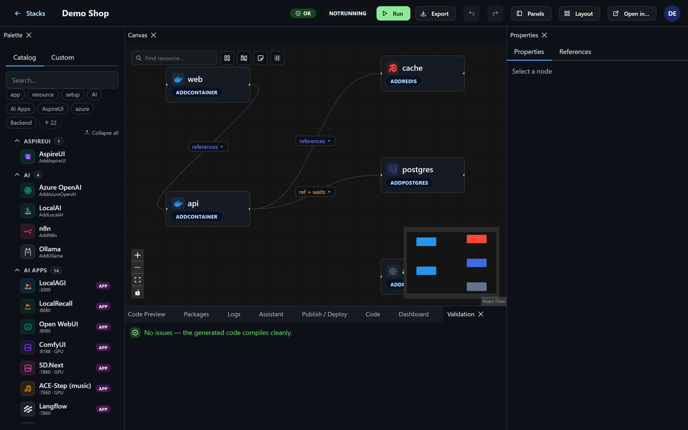
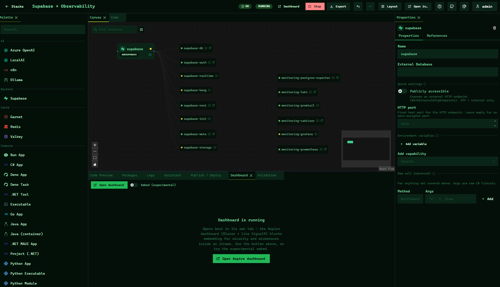
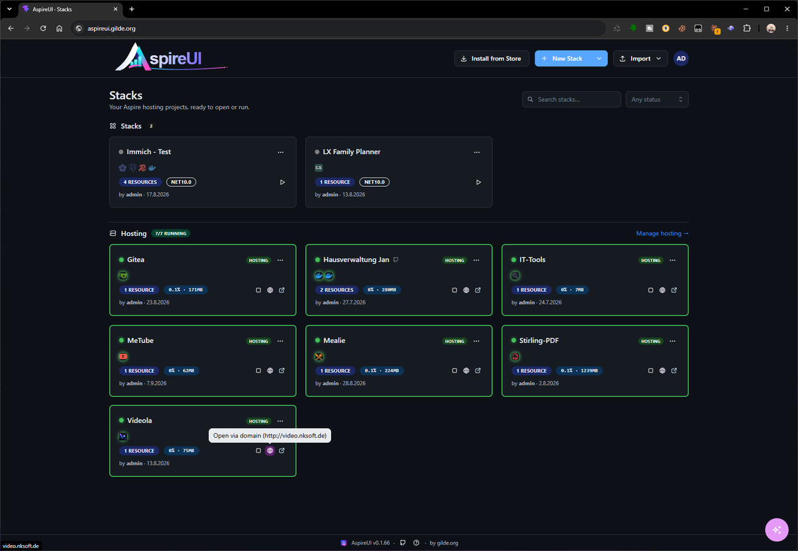
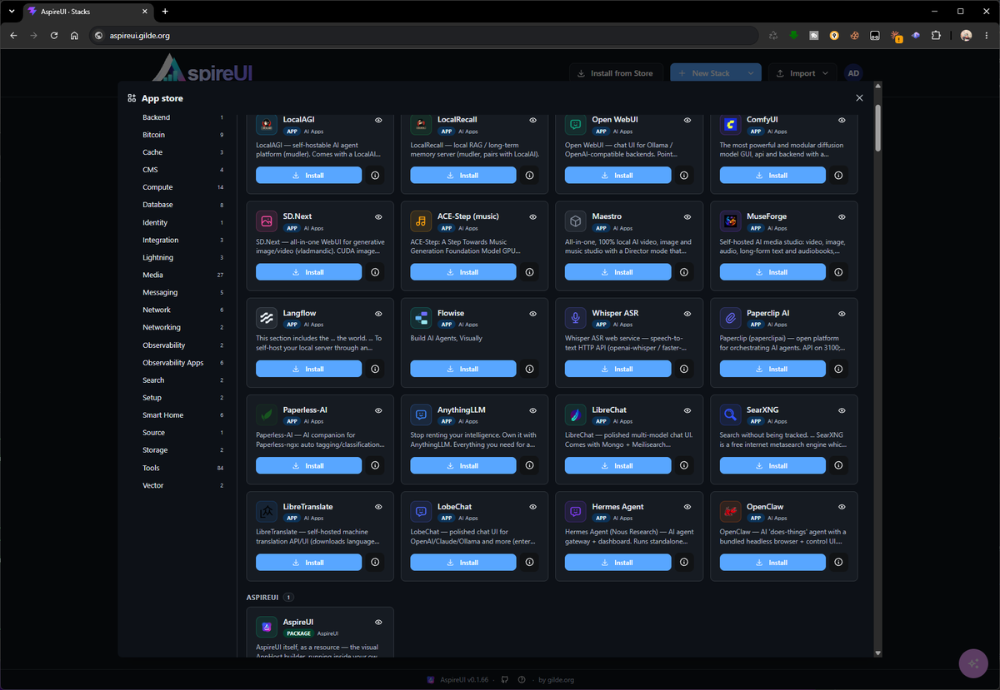
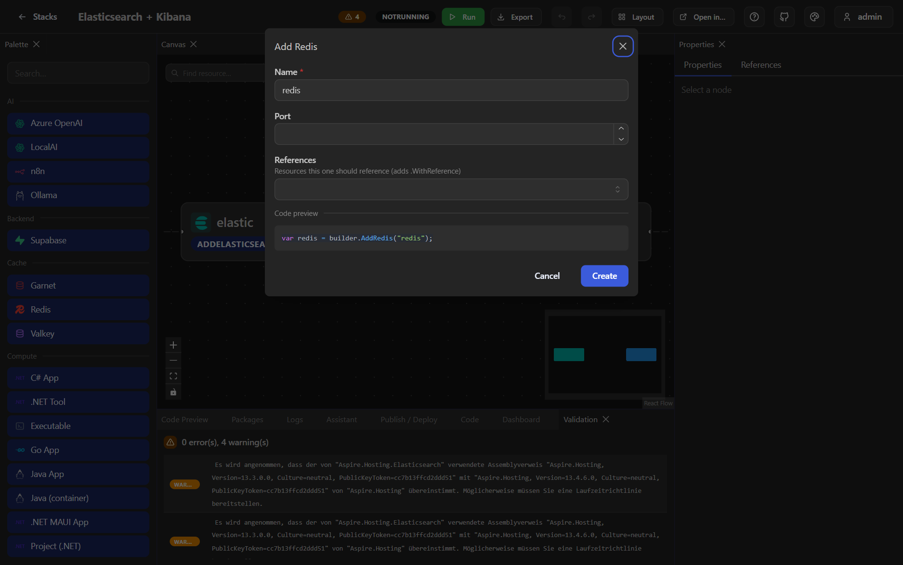

AspireUI draws a .NET Aspire AppHost as a graph, writes the C# while you edit it, starts it, and keeps what gets deployed running on hardware you own.
AspireUI zeichnet einen .NET-Aspire-AppHost als Graph, schreibt den C#-Code beim Bearbeiten mit, startet ihn und hält das, was deployt wurde, auf eigener Hardware am Laufen.
It is a browser application. On the host it needs Docker — nothing
else, not even the SDK: the image carries the .NET SDK, the Docker CLI and the
aspire CLI, because the features that run and host stacks depend on all three.
Es ist eine Browser-Anwendung. Auf dem Host braucht es Docker —
sonst nichts, nicht einmal das SDK: Das Image bringt .NET-SDK, Docker-CLI und die
aspire-CLI mit, weil die Funktionen zum Starten und Hosten alle drei brauchen.
docker run -d --name aspireui -p 8080:8080 \ -v aspireui-data:/data \ -v /var/run/docker.sock:/var/run/docker.sock \ ghcr.io/fgilde/aspireui:latest
// drag a node, add one, remove one — the C# follows
// Knoten ziehen, hinzufügen, entfernen — der C#-Code folgt
Not a picture of one. The add-resource dialog is generated from a reflection pass over the Aspire integrations the project references, so an integration you install shows up with its real parameters and its real capabilities — there is no hand-maintained list here to go stale.
Kein Bild davon. Der Dialog zum Hinzufügen von Ressourcen entsteht per Reflection über die Aspire-Integrationen, die das Projekt referenziert: Eine neu installierte Integration erscheint mit ihren echten Parametern und Fähigkeiten — hier gibt es keine handgepflegte Liste, die veralten kann.
The property grid edits those parameters. Reference pickers only offer resources
whose type fits, and offer to create a missing dependency on the spot. Composite helpers such
as AddObservabilityStack, which set up several resources at once, are discovered
the same way and grouped separately.
Das Property-Grid bearbeitet diese Parameter. Referenz-Picker zeigen nur
Ressourcen mit passendem Typ und bieten an, eine fehlende Abhängigkeit direkt anzulegen.
Zusammengesetzte Helfer wie AddObservabilityStack, die mehrere Ressourcen auf
einmal aufsetzen, werden genauso gefunden und separat gruppiert.
The code panel is not a preview you read at the end. Monaco with Roslyn-backed IntelliSense edits the same file, and an edit is parsed back into the graph — the two cannot drift apart, which is the whole reason to trust either.
Das Code-Panel ist keine Vorschau, die man am Ende liest. Monaco mit Roslyn-gestütztem IntelliSense bearbeitet dieselbe Datei, und eine Änderung wird zurück in den Graph geparst — beide können nicht auseinanderlaufen, und genau deshalb kann man beiden trauen.


Run starts the stack through the Aspire CLI and links straight into the Aspire dashboard. While it is up, each node on the canvas shows the state Aspire itself reports, the endpoint URLs it was given, and the child resources a builder created underneath it — a volume or a container you never wrote down becomes visible instead of implied. Console output streams per resource.
Run startet den Stack über die Aspire-CLI und verlinkt direkt ins Aspire-Dashboard. Solange er läuft, zeigt jeder Knoten den Zustand, den Aspire selbst meldet, die Endpunkt-URLs, die er bekommen hat, und die Kind-Ressourcen, die ein Builder darunter erzeugt hat — ein Volume oder Container, den man nie hingeschrieben hat, wird sichtbar statt nur implizit. Konsolenausgabe streamt pro Ressource.
.cs, .csproj or a .zip, a folder, a git repository, or a docker-compose.yml.Ein bestehender AppHost aus .cs, .csproj oder .zip, ein Ordner, ein Git-Repository oder eine docker-compose.yml.Hosting deploys a stack as a tracked appliance. It gets a URL, a state you can see, start / stop / update, volume backups on a schedule with retention, resource limits and a healthcheck written into the generated Compose file, and a menu for the things you otherwise do over SSH: browse and edit its files, open a real shell in the container, look at a diff before an update touches anything.
Hosting deployt einen Stack als verwaltete Appliance. Er bekommt eine URL, einen sichtbaren Zustand, Start / Stop / Update, Volume-Backups nach Zeitplan samt Aufbewahrung, Ressourcen-Limits und einen Healthcheck in der generierten Compose-Datei — und ein Menü für das, was man sonst über SSH macht: Dateien ansehen und bearbeiten, eine echte Shell im Container öffnen, vor einem Update erst den Diff lesen.
An app from the store arrives with its volumes, ports, companion databases and a freshly generated secret already wired. Each one is a single JSON file, which is why adding your own is a URL or a pull request rather than a release of ours to wait for.
Eine App aus dem Store kommt mit Volumes, Ports, Begleit-Datenbanken und einem frisch erzeugten Secret bereits verdrahtet an. Jede ist eine einzige JSON-Datei; deshalb ist eine eigene hinzuzufügen eine URL oder ein Pull Request und kein Warten auf ein Release von uns.
Not only on this machine, and not only once: an app can be installed onto several targets at once, and a running one can be moved or copied — with its data — from one target to another.
Nicht nur auf dieser Maschine und nicht nur einmal: Eine App kann auf mehrere Ziele gleichzeitig installiert werden, und eine laufende lässt sich — samt Daten — von einem Ziel auf ein anderes verschieben oder kopieren.
None of the three sections above has to interest you. Put AspireUI on a machine in your own network and use it the way people use Umbrel or Cosmos Server: open the store, pick one of 165 preconfigured apps, install it, get a URL. No canvas, no C#, no Aspire knowledge — the two shots at the bottom of this section are the entire workflow, taken from a live instance.
Keiner der drei Abschnitte darüber muss einen interessieren. AspireUI auf eine Maschine im eigenen Netz stellen und so benutzen, wie andere Umbrel oder Cosmos Server benutzen: Store öffnen, eine von 165 vorkonfigurierten Apps aussuchen, installieren, URL bekommen. Kein Canvas, kein C#, keine Aspire-Kenntnisse — die zwei Bilder am Ende dieses Abschnitts sind der ganze Arbeitsablauf, aufgenommen auf einer laufenden Instanz.
The difference is underneath. Every installed app is an ordinary Aspire stack and an ordinary Compose file, so nothing ends up in a format only this tool can read — and on the day you do want to look, you open it and everything is there.
Der Unterschied liegt darunter. Jede installierte App ist ein gewöhnlicher Aspire-Stack und eine gewöhnliche Compose-Datei; nichts landet in einem Format, das nur dieses Werkzeug lesen kann — und an dem Tag, an dem man doch hineinsehen will, ist alles da.
A Proxmox host is the shortest way there. One script goes from nothing to a working URL: it creates a clean Debian VM, installs Docker, starts AspireUI with the socket mounted, and prints the address.
Ein Proxmox-Host ist der kürzeste Weg dahin. Ein Skript führt von nichts zu einer funktionierenden URL: Es erstellt eine frische Debian-VM, installiert Docker, startet AspireUI mit eingebundenem Socket und gibt die Adresse aus.
A VM, not an LXC container. Hosting starts
other containers through the Docker socket, which needs real Docker: straightforward
in a VM, fiddly with Docker-in-LXC on PVE. It also keeps a root-equivalent socket inside one
disposable place — the honest reason for the extra VM, not a preference. Tear it all down
again with qm stop <vmid> && qm destroy <vmid>.
Eine VM, kein LXC-Container. Hosting startet
andere Container über den Docker-Socket, und das braucht echtes Docker: in einer VM
unkompliziert, Docker-in-LXC auf PVE fummelig. Außerdem bleibt so ein root-äquivalenter
Socket an einem wegwerfbaren Ort — der ehrliche Grund für die zusätzliche VM, keine
Geschmacksfrage. Alles wieder weg mit
qm stop <vmid> && qm destroy <vmid>.
A real domain per app. Put Nginx Proxy Manager in front once, and AspireUI drives that same instance from Settings → Hosting: a hosted app is given a hostname and a Let's Encrypt certificate from its own menu, without a second admin UI in the loop. Set the public host once and every app URL is built from it.
Eine echte Domain pro App. Einmal Nginx Proxy Manager davor, und AspireUI steuert genau diese Instanz aus Settings → Hosting: Eine gehostete App bekommt Hostname und Let's-Encrypt-Zertifikat aus ihrem eigenen Menü, ohne Umweg über eine zweite Admin-Oberfläche. Den Public Host einmal setzen, und jede App-URL wird daraus gebaut.
Proxmox snapshots cover the VM. The scheduled volume backups cover the app data, with a copy of each going to S3, WebDAV or another machine over scp. The two are not substitutes for one another.
Proxmox-Snapshots sichern die VM. Die geplanten Volume-Backups sichern die App-Daten, und von jedem geht eine Kopie nach S3, auf WebDAV oder per scp auf eine andere Maschine. Das eine ersetzt das andere nicht.
Nothing here is Proxmox-specific. A NAS, a spare mini PC, a VPS or an existing Docker host work the same way, and this repository doubles as an Umbrel community store and an Unraid template if that is where you already live.
Nichts davon ist Proxmox-spezifisch. Ein NAS, ein übriger Mini-PC, ein VPS oder ein bestehender Docker-Host funktionieren genauso, und dieses Repository ist zugleich ein Umbrel-Community-Store und ein Unraid-Template, falls man dort schon zu Hause ist.
# on the Proxmox host, as root
curl -fsSLO https://raw.githubusercontent.com/fgilde/AspireUI/master/deploy/pve-install-aspireui.sh
IP=192.168.1.50/24 GW=192.168.1.1 RAM=8192 CORES=4 bash pve-install-aspireui.sh
Your own projects come from a repository. Paste a git URL:
if it holds a docker-compose.yml, an aspireui-app.json or an Aspire
AppHost, AspireUI builds it and deploys it as a hosted app — branch, compose file, services and
environment are picked in the dialog. Pull and redeploy later from the app's own menu, or let a
webhook do it when the repository or the image moves.
Eigene Projekte kommen aus einem Repository. Eine
Git-URL einsetzen: Enthält sie eine docker-compose.yml, eine
aspireui-app.json oder einen Aspire-AppHost, baut AspireUI sie und deployt sie als
gehostete App — Branch, Compose-Datei, Services und Umgebung wählt man im Dialog. Später aus dem
Menü der App neu ziehen und deployen, oder einen Webhook das tun lassen, wenn sich Repository
oder Image bewegt.


Then AspireUI can be part of it.
Nextended.Aspire.Hosting.AspireUI
adds it as a resource — the container, an HTTP endpoint, the host Docker socket, a named
volume for its data — and then writes down the entire first run: the admin account, further
accounts with a permission preset, deploy targets, catalog apps, a starter stack built from
the ProjectResources in this very AppHost, the assistant pointed at an Ollama
container in the same stack, single sign-on, off-site backups.
Dann kann AspireUI ein Teil davon sein.
Nextended.Aspire.Hosting.AspireUI
fügt es als Ressource hinzu — Container, HTTP-Endpunkt, Docker-Socket des Hosts, ein
benanntes Volume für die Daten — und schreibt dann den ganzen ersten Start auf: das
Admin-Konto, weitere Konten mit Rechte-Preset, Deploy-Ziele, Katalog-Apps, einen Start-Stack
aus den ProjectResources genau dieses AppHosts, den Assistenten auf einen
Ollama-Container im selben Stack gezeigt, Single Sign-on, Backups nach auswärts.
Everything is idempotent by name. Restarting with the same AppHost changes nothing, adding one entry adds exactly that one, and anything somebody changed in the UI stays changed unless you explicitly ask for the opposite. Secrets come from Aspire parameters, so they stay out of the source and out of the manifest.
Alles ist idempotent über den Namen. Ein Neustart mit demselben AppHost ändert nichts, ein zusätzlicher Eintrag fügt genau diesen einen hinzu, und was jemand in der Oberfläche geändert hat, bleibt geändert — es sei denn, man verlangt ausdrücklich das Gegenteil. Secrets kommen aus Aspire-Parametern und bleiben damit außerhalb von Quellcode und Manifest.
Docs for the package: English · Deutsch · runnable sample. Seeding without the package is environment variables and a seed file.
Doku zum Paket: Deutsch · English · lauffähiges Beispiel. Ohne das Paket geht dasselbe über Umgebungsvariablen und eine Seed-Datei.
dotnet add package Nextended.Aspire.Hosting.AspireUI
var builder = DistributedApplication.CreateBuilder(args); var api = builder.AddProject<Projects.Api>("api"); var web = builder.AddProject<Projects.Web>("web").WithReference(api); var ollama = builder.AddOllama("ollama").WithDataVolume(); builder.AddAspireUI() .WithAdminUser("admin", builder.AddParameter("admin-password", secret: true)) .WithProjectStack("My App", api, web) // canvas + sources mounted .WithApps("gitea", "vaultwarden") .WithOllamaAssistant(ollama, "llama3.2") .WithSingleSignOn("https://id.example.com/realms/main", "aspireui", builder.AddParameter("sso-secret", secret: true)) .WithSettings(s => { s.PublicHost = "apps.example.com"; s.BackupIntervalHours = 12; }) .WithAutoDeploy(); builder.Build().Run();
// AddOllama comes from the Aspire Community Toolkit
// AddOllama kommt aus dem Aspire Community Toolkit
The reason is mechanical, not motivational: the code appears the moment you make
the call. Drop a Postgres node and there is the AddPostgres("db").WithDataVolume();
wire a project to it and the WithReference(db) lands in the right place in the
right chain. Delete it again and watch what disappears with it.
Der Grund ist mechanisch, nicht motivierend: Der Code erscheint in dem Moment, in
dem man den Aufruf macht. Einen Postgres-Knoten ablegen — da steht
AddPostgres("db").WithDataVolume(); ein Projekt daran hängen, und
WithReference(db) landet an der richtigen Stelle in der richtigen Kette. Wieder
löschen und zusehen, was mit verschwindet.
Then the other direction: import an existing AppHost and read it as a graph. Publish one and put the generated Compose file, Helm chart or Bicep next to the C# that produced it. And the store apps are ordinary stacks — open one and see how its volumes, published ports and companion database were actually wired.
Dann die andere Richtung: Einen bestehenden AppHost importieren und als Graph lesen. Einen veröffentlichen und die erzeugte Compose-Datei, das Helm-Chart oder das Bicep neben den C#-Code legen, der sie erzeugt hat. Und die Store-Apps sind gewöhnliche Stacks — einen öffnen und sehen, wie Volumes, veröffentlichte Ports und Begleit-Datenbank wirklich verdrahtet sind.
